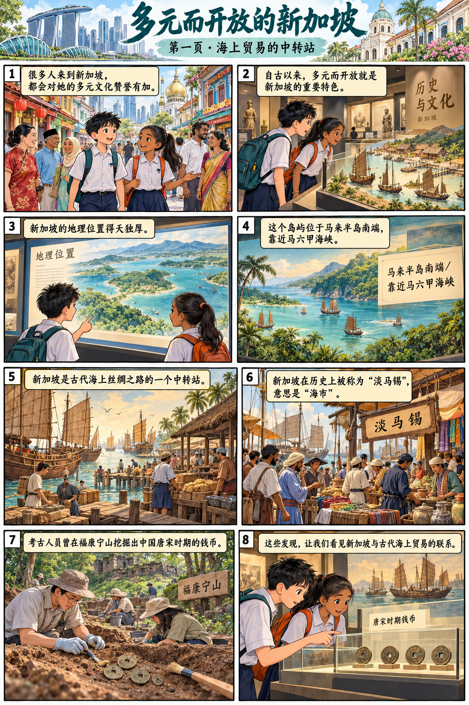
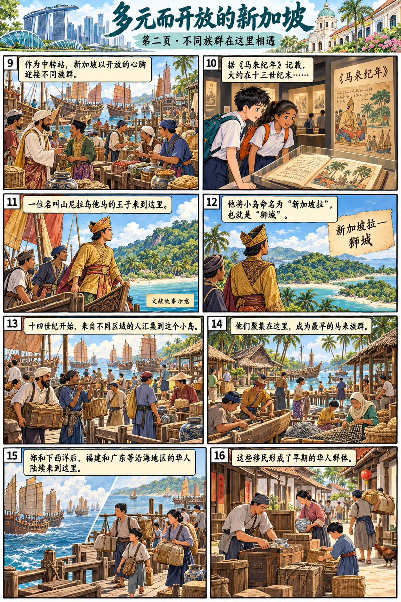
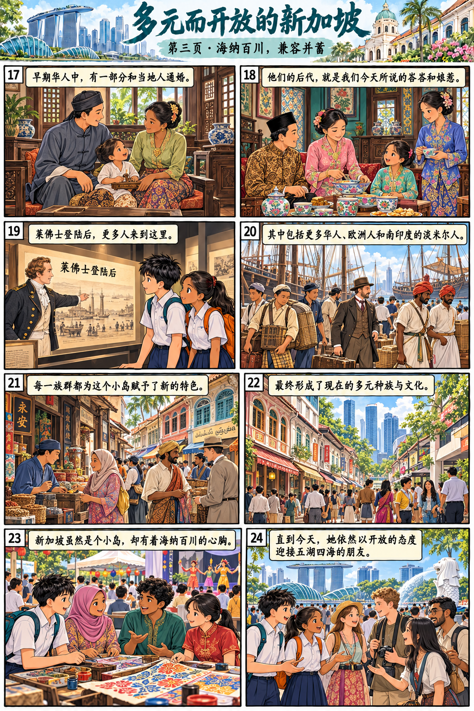
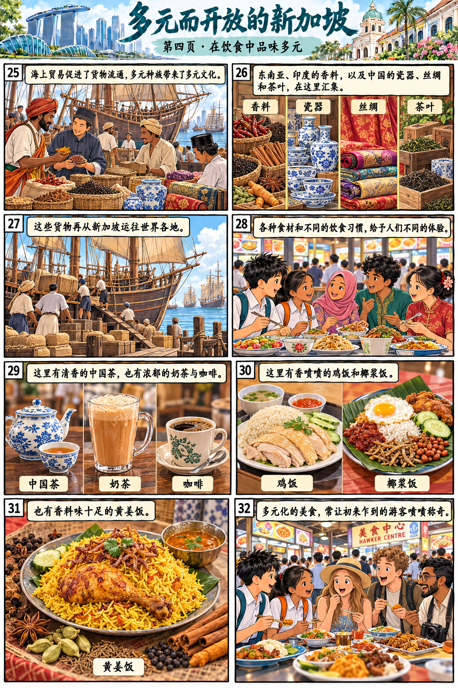
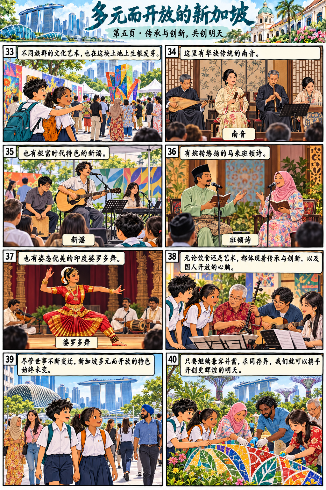

全文与漫画回读
漫画帮助理解，作答依据回到原文。
第1段
很多人来到新加坡，都会对她的多元文化赞誉有加。其实，自古以来，多元而开放就是新加坡的重要特色。
第2段
新加坡的地理位置可谓得天独厚，这决定了她多元而开放的发展方向。这个岛屿位于马来半岛南端，靠近马六甲海峡，是古代海上丝绸之路的一个中转站。新加坡在历史上被称为“淡马锡”，意思是“海市”。考古人员曾经在福康宁山上挖掘出中国唐宋时期的钱币。由此可见，远在那个时候，新加坡就已经为海上丝绸之路的发展做出了贡献。
第3段
作为中转站，新加坡一直以开放的心胸迎接着不同的族群。按《马来纪年》的记载，大约在十三世纪末，一位名叫山尼拉乌他马的王子来到这座小岛，将她命名为“新加坡拉”，也就是“狮城”。十四世纪开始，来自不同区域的人汇集到这个小岛，这里的族群也逐渐变得多元化。东南亚一些群岛的居民聚集在这里，成为最早的马来族群。十五世纪，郑和下西洋后，中国福建和广东等沿海地区的华人陆续来到这里，形成早期的华人群体。早期华人中有一部分和当地人通婚，他们的后代就是我们今天所说的峇峇和娘惹。
第4段
在莱佛士登陆后，更多的华人、欧洲人和南印度的淡米尔人来到这里，每一个族群都为这个小岛赋予了新的特色，最终形成现在的多元种族与文化。新加坡虽然是个小岛，却有着海纳百川的心胸。直到今天，她依然保有开放的态度，迎接来自五湖四海的朋友。
第5段
海上贸易促进了货物的流通，多元种族带来了多元的文化。在日常生活和文化艺术中，我们更能感受到新加坡的多元而开放。
第6段
南来北往的船只，东奔西走的客商，把东南亚、印度的香料和中国的瓷器、丝绸、茶叶运到新加坡，再从这里运往世界各地。各种各样的食材和不同的饮食习惯给予人们不同的体验。想喝点什么？这里有清香的中国茶，也有浓郁的奶茶与咖啡。想吃点什么？这里有香喷喷的鸡饭和椰浆饭，也有香料味十足的黄姜饭。多元化的美食，常常会让很多初来乍到的游客啧啧称奇。与此同时，不同族群的文化艺术也在这块土地上生根发芽。这里有华族传统的南音，也有极富时代特色的新谣；有婉转悠扬的马来班顿诗，也有姿态优美的印度婆罗多舞。无论饮食还是艺术，我们都能从中看出传承与创新，更能从这美妙的多元文化中看出国人开放的心胸。
第7段
今天的新加坡是一个引人瞩目的国际化都市，每一个来到这里的人都能感受到她的丰富多彩。尽管世事不断变迁，但新加坡多元而开放的特色始终未变。只要我们继续兼容并蓄，求同存异，就可以携手开创更辉煌的明天。




